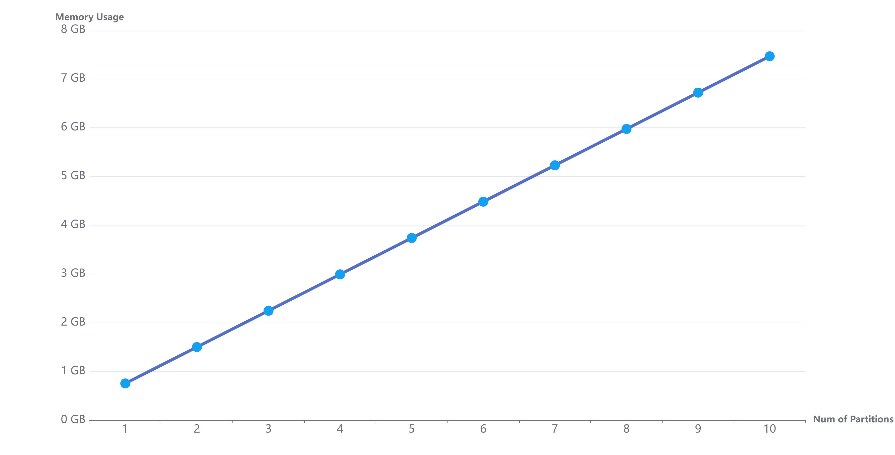
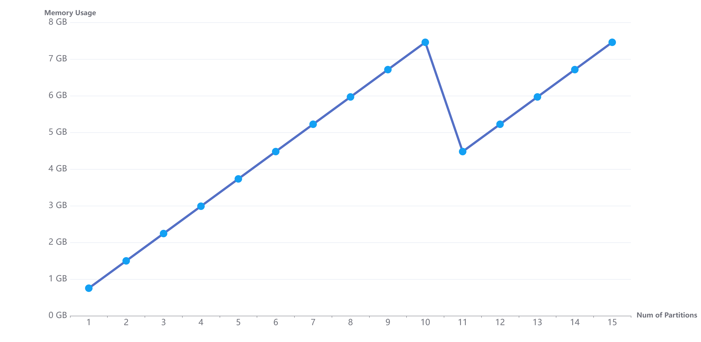
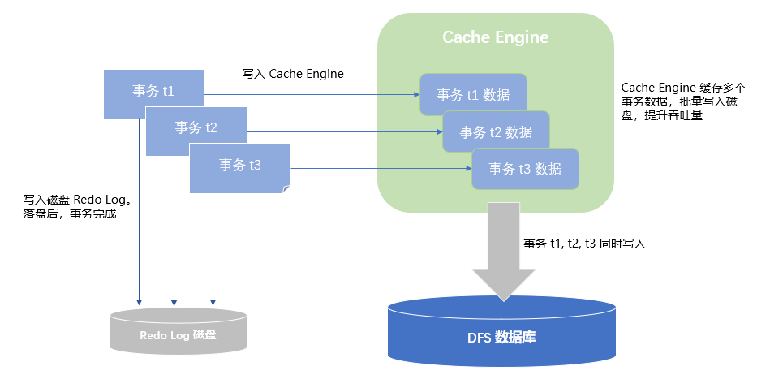
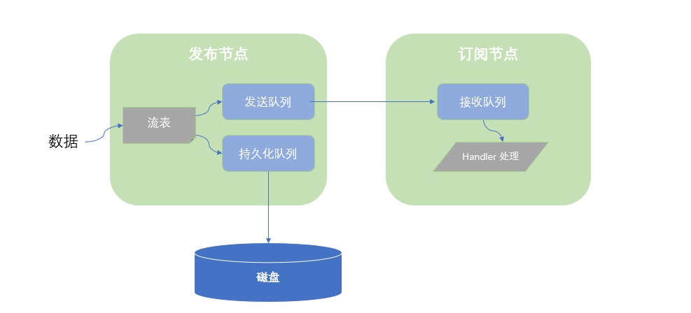

内存管理
DolphinDB 是一款支持多用户多任务并发操作的高性能分布式时序数据库软件（distributed time-series database）。针对大数据的高效的内存管理是其性能优异的原因之一。
1. 内存管理机制及相关配置参数
DolphinDB 使用 TCMalloc 进行内存分配。当用户查询操作或编程环境需要内存时，DolphinDB 会以 512MB 为单位向操作系统申请内存。如果操作系统无法提供大块的连续内存，则会尝试 256MB，128MB 等更小的内存块。系统会每隔 30 秒扫描一次，如果内存块完全空闲，则会整体还给操作系统，如果仍有小部分内存在使用，比如 512MB 的内存块中仍有 10MB 在使用，则不会归还操作系统。
DolphinDB 开放了一些内存管理相关的配置项，方便用户根据系统情况进行合理设置。
- 通过参数 maxMemSize 设定节点的最大内存使用量：该参数指定节点的最大可使用内存。如果设置太小，会严重限制集群的性能；如果设置值超过物理内存，则内存使用量过大时可能会触发操作系统强制关闭进程。同一个服务器上各数据节点的最大内存使用量之和，建议设置为机器可用内存的 75%。例如机器内存为 16GB，并且只部署 1 个节点，建议将该参数设置为 12GB 左右。
- 参数 warningMemSize 设定最多可缓存的数据量：当节点的内存使用总量小于 warningMemSize（以 GB 为单位，默认值为 maxMemSize 的 75%）时，DolphinDB 会尽可能多的缓存数据库分区数据，以便提升用户下次访问该数据块的速度。当内存使用量超过 warningMemSize 时，系统采用 LRU 的内存回收策略，自动清理部分数据库的缓存，以避免出现 OOM 异常。
- 参数 reservedMemSize 和 maxBlockSizeForReservedMemory：当系统剩余可用的内存不能满足用户的操作需要时，可能会出现数据读写失败、OOM 等问题。当已分配内存不满 maxMemSize 但已达到 maxMemSize - reservedMemSize 时，新分配内存的操作如大于 maxBlockSizeForReservedMemory 将受限或失败，从而减少系统关键操作失败的概率。例如，当出现因内存不够导致写入失败时，仍然能够正常回滚，避免出现数据不一致的问题。
- 参数 memoryReleaseRate 控制将未使用的内存释放给操作系统的速率：memoryReleaseRate 是 0 到 10 之间的浮点数。memoryReleaseRate=0 表示不会主动释放未使用的内存。设置值越高，DolphinDB 释放内存的速度越快。默认值是 5。
- 参数 maxPartitionNumPerQuery 控制单次查询数据量：系统默认允许单次最多可查找 65536 个分区的数据。若一次查询过多分区，需加载到内存的数据量过大，则可能导致 OOM。可根据需求以及可用内存量，适当调节该参数，控制单次可查询的分区数量。
关于参数配置的详情，参见用户手册，内存配置参数（单实例配置）
2. 高效使用内存
在企业的生产环境中，DolphinDB 往往作为流数据处理中心以及历史数据仓库，为业务人员提供数据查询和计算。当用户较多时，不当的使用容易造成 Server 端内存耗尽，抛出 "Out of Memory" 异常。可遵循以下建议，尽量避免内存的不合理使用。
- 合理均匀分区：DolphinDB 以分区为单位加载数据，因此，分区大小对内存影响巨大。合理均匀的分区，不管对内存使用还是对性能而言，都有积极的作用。因此，在创建数据库的时候，根据数据规模，合理规划分区大小。每个分区压缩前的数据量在 100M B 到 1GB 之间为宜。具体分区设计，请参考分区注意事项。
- 及时释放数据量较大的变量：若用户创建数据量较大的变量，例如 v = 1..10000000，或者将含有大量数据的查询结果赋值给一个变量 t = select * from t where date = 2010.01.01，v 和 t 将会在用户的 session 占用大量的内存。如果不及时释放，执行其他任务时，就有可能因为内存不足而抛出异常。用户的私有变量在其创建的 session 里面保存。session 关闭的时候，会回收这些内存。可通过
undef函数将其赋值为 NULL，或者关闭session来及时释放变量的内存。 - 只查询需要的列：避免使用 select *，select * 会把该分区所有列加载到内存，而实际查询往往只需要几列的数据。因此，为避免内存浪费，尽量明确写出所有查询的列。
- 数据查询尽可能使用分区过滤条件：DolphinDB 按照分区进行数据检索，如果不加分区过滤条件，则会全部扫描所有数据，数据量大时，内存很快被耗尽。若存在多个过滤条件，将包含分区列的过滤条件前置。
- 合理配置流数据的缓存区：一般情况下流数据的容量 (capacity) 会直接影响发布节点的内存占用。比如，在对流数据表进行持久化时，若 capacity 设置为 1000 万条，那么流数据表在超过 1000 万条时，会将约一半的数据进行存盘并回收，也就是内存中会保留 500 万条左右。因此，应根据发布节点的最大内存，合理设计流数据表的 capacity。尤其是在多张发布表的情况，更需要谨慎设计。
3. 内存监控及常见问题
3.1. 内存监控
3.1.1. controller 上监控集群中节点内存占用
在 controller 上提供函数 getClusterPerf() 函数，显示集群中各个节点的内存占用情况。包括：
memoryAlloc：节点上分配的总内存，近似于向操作系统申请的内存总和。
memoryUsed：节点已经使用的内存。该内存包括变量、分布式表缓存以及各种缓存队列等。
maxMemSize：节点可使用的最大内存限制。
3.1.2. mem() 函数监控某个节点内存占用
mem() 函数可以显示整个节点的内存分配和占用情况。allocatedBytes 为已分配内存；freeBytes 是可用内存。两者之差为已占用内存。通过 mem().allocatedBytes - mem().freeBytes 得到节点所使用的总的内存大小。（注：如使用 1.20.0 及更早版本，通过 sum(mem().allocatedBytes - mem().freeBytes) 进行计算。）
3.1.3. objs() 函数监控某个会话内各变量的内存占用
通过函数 objs 来查看会话内所有变量的内存占用。该函数返回一个表，其中列 bytes 表示变量占用的内存块大小。objs(true) 除返回当前会话中变量的内存占用外，还返回共享变量的内存占用（包括其他会话共享的变量）。
3.1.4. 查看某个对象占用的内存大小
通过函数 memSize 来查看某个对象占用内存的具体大小，单位为字节。比如
v=1..1000000
memSize(v)输出：4000000。
3.1.5. 监控节点上不同 session 的内存占用
可通过函数 getSessionMemoryStat() 查看节点上每个 session 占用的内存量，输出结果只包含 session 内定义的变量。由于共享表和分布式表不属于某个用户或会话，因此返回结果中不包含它们占用的内存信息。由于输出结果亦包含用户名，也可查看每个用户的内存使用情况。
3.1.6. 查看后台正在运行的任务
以上方法无法获取后台运行任务所占用的内存。可以通过函数 getRecentJobs 来查看正在运行的后台任务。目前，DolphinDB 无法通过函数查看后台任务的内存占用情况，需用户根据业务逻辑进行估算。若内存比较紧张，可以取消一些暂无必要执行的后台任务，以释放内存空间。
3.2. 常见问题
3.2.1. 监控显示节点内存占用太高
若节点内存接近 warningMemSize，通过函数 clearAllCache() 来手动释放节点的缓存数据。如果内存占用仍然未显著降低，请依次排查下述问题：
通过函数
getSessionMemoryStat()结合objs()和objs(true)排查是否某个用户忘记undef了变量 ;通过函数
getRecentJobs()和getConsoleJobs()查看是否还有超过预期运行时长的后台或交互任务。运行中的任务的内存占用不反映在getSessionMemoryStat();getStreamingStat()查看流数据内存占用，详见 流数据消息缓存队列。
3.2.2. Out of Memory (OOM)
该异常往往是由于 query 所需的内存大于系统可提供的内存导致的。请先执行下列脚本查看所有数据节点内存使用情况，其中 maxMemSize 为配置的节点最大可用内存，memoryUsed 为节点已使用内存，memoryAlloc 为节点已分配内存。
select site, maxMemSize, memoryUsed, memoryAlloc from rpc(getControllerAlias(),getClusterPerf)OOM 一般可能由以下原因导致:
查询没有加分区过滤条件或者条件太宽，导致单个 query 涉及的数据量太大。
查询涉及多少分区可用
sqlDS函数来判断，示例脚本如下：ds=sqlDS(<select * from loadTable("dfs://demo","sensor")>) ds.size()为避免这个问题，参见本文档的DolphinDB 按照分区进行数据检索 ，更详细的说明请参考教程 SQL 案例分区剪枝
写入缓存占用了大量内存。
getCacheEngineMemSize() //查看 OLAP 引擎的 Cache Engine 占用内存 getTSDBCacheEngineSize() //查看 TSDB 引擎的 Cache Engine 占用内存为避免这个问题，请参考本文档 为分布式数据库提供写入缓存
分区不均匀。可能某个分区过大，该分区的数据超过节点配置的最大内存。
查询每个分区的大小可用
getTabletsMeta函数，例如：getTabletsMeta("/demo/%", `sensor, true);为避免这个问题，参见分区设计注意事项。
某个 session 持有大的变量，导致节点可用的内存很小。
可以通过函数
getSessionMemoryStat()查看各个 session 占用的内存大小。某个 session 持有大的变量，导致节点可用的内存很小。 通过函数
getSessionMemoryStat()查看各个 session 占用的内存大小及各 session 对应的用户。通过以下脚本查看每个数据节点上定义的变量和占用的内存：
pnodeRun(objs) //查询每个节点定义变量占用内存（非共享变量） pnodeRun(objs{true}) //查询每个节点定义变量占用内存（包含共享变量）为避免这个问题，请参考本文档高效使用内存下的“及时释放数据量较大的变量”
流数据计算引擎占用了大量内存。
用
getStreamingStat()来查看发布、订阅各个队列的深度。用getStreamEngineStat()查看流计算引擎占用内存。为避免这个问题，请参考本文档 流数据消息缓存队列。
3.2.3. 查询时，DolphinDB 进程退出，没有 coredump 产生
这种情况往往是由于给节点分配的内存超过系统物理内存的限制，操作系统把 DolphinDB 强制关闭。Linux 内核有个机制叫 OOM killer(Out of Memory killer)，该机制会监控那些占用内存过大，尤其是瞬间占用很大内存的进程，为防止内存耗尽而自动把该进程杀掉。排查 OOM killer 可用 dmesg 命令，示例如下：
dmesg -T|grep dolphindb若打印结果中出现了“Out of memory: Kill process”，说明操作系统杀死了 DolphinDB 进程（详情请见 Linux Kernel 相关文档）。解决这种问题的办法是：通过参数 maxMemSize（单节点模式修改 dolphindb.cfg，集群模式修改 cluster.cfg）设定节点的最大内存使用量。
3.2.4. 执行 mem(true) 或 clearAllCache() 后，操作系统实际内存占用未降低（如 Linux 中 RSS 占用）
这是由于未使用的内存没有及时释放给操作系统。通过 memoryReleaseRate 控制将未使用的内存释放给操作系统的速率，memoryReleaseRate=10 表示以最快的速度释放内存，默认值是 5。该参数等价于设置了 TCMalloc 的 tcmalloc_release_rate。
注：执行 mem() 以显示本地节点内存使用情况。如设置其参数 freeUnusedBlocks=true，系统将会释放未使用的内存块。
3.2.5. 执行 loadText 大批量加载到内存时，时间过久或卡死
可检查 log 中是否打印 Cache Engine 相关的信息。若存在这样的信息，说明使用 loadText 加载到内存的事务超过了 chunkCacheEngineMemSize 或 TSDBCacheEngineSize 的大小，导致事务卡死。
解决方案如下：
调大配置中的 chunkCacheEngineMemSize 或 TSDBCacheEngineSize 值。
2.00.4 及以上版本，请使用 loadTextEx 函数加载数据。这是因为 loadTextEx 函数可以通过参数 atomic，设置将大文件加载过程拆分为多个事务进行。
3.2.6. getClusterPerf() 返回的节点分配内存（memoryAlloc）与操作系统实际显示值有差异
DolphinDB 是 C++ 程序，本身需要一些基础的数据结构和内存开销，memoryAlloc 显示内存不包括这些内存。在执行 clearAllCache 后，如果 memoryAlloc 的值占操作系统实际显示值的 80% 以上，属于正常现象。
4. 变量的内存管理
DolphinDB 为用户提供与回收编程环境所需内存，本节介绍为变量分配内存，及释放变量内存的方法。
4.1. 创建变量
示例 1. 创建一个 vector，含有 1 亿个 INT 类型元素，约 400MB。
v = 1..100000000
mem().allocatedBytes - mem().freeBytes //输出内存占用结果结果为：402,865,056，内存占用 400MB 左右，符合预期。
示例 2. 创建一个 table，1000 万行，5 列，每列 4 字节，约 200MB。
n = 10000000
t = table(n:n,["tag1","tag2","tag3","tag4","tag5"],[INT,INT,INT,INT,INT])
mem().allocatedBytes - mem().freeBytes结果为：612,530,448，约 600MB，符合预期。
4.2. 释放变量
可通过 undef 函数或者赋值为 NULL，释放变量的内存。
示例 3. 使用 undef 函数
undef(`v)或者
v = NULL释放共享变量占用内存示例如下：
undef("sharedTable", SHARED)除了手动释放变量，当 session 关闭时，比如关闭 GUI 和其他 API 连接，都会触发对该 session 的所有内存进行回收。当通过 web notebook 连接时，10 分钟内无操作，系统会关闭 session，自动回收内存。
5. 分布式数据库读缓存管理
DolphinDB 在不同存储引擎的读缓存管理上存在区别。本节分别介绍 OLAP 引擎和 TSDB 引擎读缓存的分配和管理。OLAP 引擎自动将查询过的历史数据加载到读缓存，后续相关数据的查询将先从缓存中读取。多个会话共享分区表读缓存数据，以提高内存使用率。TSDB 引擎通过索引可快速定位分布式表的数据位置，所以 TSDB 引擎的读缓存只缓存查询数据相关的索引文件，不缓存查询的数据。
5.1. OLAP 引擎分布式表的缓存管理
DolphinDB 对分布式表是以分区中的列为单位管理的。系统自动将查询的分区数据加载到读缓存，后续相关数据的查询将首先从缓存中读取。DolphinDB 记录所有数据的版本号，通过版本机制系统可以快速确定是否需要为一个查询更新缓存。读缓存无需用户指定，系统自动进行管理，当内存不足时，系统自动释放一部分缓存。
历史数据一般以分布式表的形式存在数据库中，用户平时查询操作也往往直接查询分布式表。分布式表的内存管理有如下特点：
- 内存以分区的一列为单位进行管理。
- 数据只加载到所在的节点，不会在节点间转移。
- 多个用户访问相同分区时，使用同一份缓存。
- 内存使用不超过 warningMemSize 情况下，尽量多缓存数据。
- 缓存数据达到 warningMemSize 时，系统开始自动回收。
以下多个示例是基于以下集群：部署于 2 个数据节点，采用单副本模式。按天分 30 个区，每个分区 1000 万行，11 列（1 列 DATE 类型，1 列 INT 类型，9 列 LONG 类型），所以每个分区的每列 (LONG 类型）数据量为 1000 万行 * 8 字节/列 = 80M，每个分区共 1000 万行 * 80 字节/行 = 800M，整个表共 3 亿行，大小为 24GB。
函数 clearAllCache() 可清空已经缓存的数据。下面的每次测试前，先用 pnodeRun(clearAllCache) 清空节点上的所有缓存。
login(`admin,`123456)
if(existsDatabase("dfs://mem")){
dropDatabase("dfs://mem")
}
db = database("dfs://mem",VALUE,2022.01.01..2022.01.30)
m = "tag" + string(1..9)
schema = table(1:0,`id`day join m, [INT,DATE] join take(LONG,9) )
db.createPartitionedTable(schema,"pt1",`day)
//写入模拟数据
for (i in 0..29){
t=table(1..10000000 as tagid,take(2022.01.01+i,10000000) as date,1..10000000 as tag1,1..10000000 as tag2,1..10000000 as tag3,1..10000000 as tag4,1..10000000 as tag5,1..10000000 as tag6,1..10000000 as tag7,1..10000000 as tag8,1..10000000 as tag9 )
dfsTable=loadTable("dfs://mem","pt1")
dfsTable.append!(t)
}
//查询15个分区的数据
t=select top 15 * from rpc(getControllerAlias(),getClusterChunksStatus) where file like "/mem%" and replicas like "node1%" order by file
pnodeRun(clearAllCache)
days=datetimeParse(t.file.substr(5,8),"yyyyMMdd")
for(d in days){
select * from loadTable("dfs://mem","pt1") where day= d
print mem().allocatedBytes - mem().freeBytes
}5.1.1. 内存以分区列为单位进行管理
DolphinDB 采用列式存储，当用户对分布式表的数据进行查询时，加载数据的原则是，只把用户所要求的分区和列加载到内存中。
示例 4. 计算分区 2022.01.01 最大的 tag1 的值。我们只查询 1 个分区的一列数据，仅把该列数据全部加载到内存，其他的列不加载。
该分区储存在 node1 上（可以在 controller 上通过函数 getClusterChunksStatus() 查看分区分布情况，而且由上面可知，每列约 80MB）。在 node1 上 执行如下代码，并查看内存占用。
select max(tag1) from loadTable(dbName,tableName) where day = 2022.01.01
mem().allocatedBytes - mem().freeBytes)输出结果为 84,267,136。
示例 5. 在 node1 上查询 2022.01.01 的前 100 条数据，并观察内存占用。
select top 100 * from loadTable(dbName,tableName) where day = 2022.01.01
mem().allocatedBytes - mem().freeBytes输出结果为 839,255,392。虽然我们只取 100 条数据，但是 DolphinDB 加载数据的最小单位是分区列，所以需要加载每个列的全部数据，也就是整个分区的全部数据，约 800MB。
注意： 合理分区以避免 "out of memory"：DolphinDB 以分区为单位管理内存，因此内存的使用量跟分区关系密切。假如分区不均匀，导致某个分区数据量超大，甚至机器的全部内存都不足以容纳整个分区，那么当涉及到该分区的查询计算时，系统会抛出 "out of memory" 的异常。一般原则，数据表的每个分区的数据量在 100MB-1GB 之间为宜。如果表有 10 列，每个字段 8 字节，则每个分区约 100-200 万行。
5.1.2. 数据只加载到所在的节点
在数据量大的情况下，节点间转移数据是非常耗时的操作。DolphinDB 的数据是分布式存储的，当执行任务时，把任务发送到数据所在的节点，然后把结果汇总到发送任务的节点。系统会尽最大努力避免将数据跨节点转移。
示例 6. 在 node1 上计算两个分区中 tag1 的最大值。其中分区 2022.01.02 的数据存储在 node1 上，分区 2022.01.03 的数据存储在 node2 上。
select max(tag1) from loadTable(dbName,tableName) where day in [2022.01.02,2022.01.03]
mem().allocatedBytes - mem().freeBytes输出结果为 84,284,096。在 node2 上查看内存占用为 84,250,624 字节。每个节点存储的数据都为 80MB 左右，也就是 node1 上存储了分区 2022.01.02 的数据，node2 上仅存储了 2022.01.03 的数据。
示例 7. 在 node1 上查询分区 2022.01.02 和 2022.01.03 的所有数据，我们预期 node1 加载 2022.01.02 数据，node2 加载 2022.01.03 的数据，都是 800MB 左右，执行如下代码并观察内存。
select top 100 * from loadTable(dbName,tableName) where day in [2022.01.02,2022.01.03]
mem().allocatedBytes - mem().freeBytesnode1 上输出结果为 839,279,968 字节。node2 上输出结果为 839,246,496 字节。结果符合预期。
注意： 请谨慎使用没有过滤条件的 "select *"，因为这会将所有数据载入内存。特别在列数很多的时候，建议仅加载需要的列。
5.1.3. 多个用户访问相同分区时，使用同一份缓存
DolphinDB 支持海量数据的并发查询。为了高效利用内存，对相同分区的数据，内存中只保留同一份副本。
示例 8. 打开两个 GUI，分别连接 node1 和 node2，查询分区 2022.01.01 的数据，该分区的数据存储在 node1 上。
select * from loadTable(dbName,tableName) where date = 2022.01.01
mem().allocatedBytes - mem().freeBytesnode1 上内存显示 839,101,024，而 node2 上无内存占用。系统将分区数据载入 node1 内存，然后将数据传输到 node2 内存，最后下载到客户端。之后，系统会将此次操作在 node2 所用内存释放。
5.1.4. 节点内存使用不超过 warningMemSize 情况下，尽量多缓存数据
通常情况下，最近访问的数据往往更容易再次被访问，因此 DolphinDB 在内存允许的情况下（内存占用不超过用户设置的 warningMemSize），尽量多缓存数据，来提升后续查询效率。
示例 9. 数据节点设置的 maxMemSize=10,warningMemSize=8。连续加载 9 个分区，每个分区约 800M，总内存占用约 7.2GB，观察内存的变化趋势。
dbPath = right(dbName,strlen(dbName)-5)
p = select top 9 * from rpc(getControllerAlias(),getClusterChunksStatus)
where file like dbPath +"%" and replicas like "node1%" //这里节点1的别名为node1
order by file
days = datetimeParse(t.file.substr(strlen(dbPath)+1,8),"yyyyMMdd")
for(d in days){
select * from loadTable(dbName,tableName) where date= d
print mem().allocatedBytes - mem().freeBytes
}
内存随着加载分区数的增加变化规律如下图所示：

当遍历每个分区数据时，在内存使用量不超过 warningMemSize 的情况下，分区数据会全部缓存到内存中，以便用户下次访问时，直接从内存中读取数据，而不需要再次从磁盘加载。
5.1.5. 节点内存使用达到 warningMemSize 时，系统自动回收
当总的内存使用达到 warningMemSize 时，DolphinDB 会采用 LRU 的内存回收策略，回收一部分内存。
示例 10. 上面用例只加载了 9 天的数据，此时我们继续共遍历 15 天数据，查看缓存达到 warningMemSize 时，内存的占用情况。如下图所示：

如上图所示，当缓存的数据超过 warningMemSize 时，系统自动回收内存，总的内存使用量仍然小于用户设置的 warningMemSize。
示例 11. 当缓存数据接近用户设置的 warningMemSize 时，继续申请 Session 变量的内存空间，查看系统内存占用。
此时先查看系统的内存使用：
mem().allocatedBytes - mem().freeBytes输出结果为 7,550,138,448。内存占用超过 7GB，而用户设置的最大内存使用量为 10GB，此时我们继续申请 4GB 空间。
v = 1..1000000000
mem().allocatedBytes - mem().freeBytes输出结果为 8,196,073,856。约为 8GB，也就是如果用户定义变量时，可使用的内存不足，系统会触发缓存数据的内存回收，以保证有足够的内存提供给用户使用。
5.2. TSDB 引擎分布式表的读缓存管理
与 OLAP 引擎存储数据的最小文件为列文件不同，TSDB 引擎存储数据的最小文件是 level file。每个 level file 都记录了元信息，数据块和数据块对应的索引。TSDB 查询分布式表数据时，会将分区下 level file 的索引部分加载到内存，然后将索引定位的数据部分加载到内存。正是因为通过索引就可以快速定位数据并加载，TSDB 只需要缓存索引数据，无需缓存查询的分区数据。TSDB 索引缓存的容量由配置参数 TSDBLevelFileIndexCacheSize 指定，单位为 GB，默认值为 maxMemSize 的 5%，最小值为 0.1GB。若索引缓存空间不够时，会按照 LRU 算法，释放最近最少使用的 5% 的缓存空间。可通过函数 getLevelFileIndexCacheStatus 获取 TSDB 索引数据占用的内存空间大小。
示例 12.TSDB 引擎下已经创建了如下分布式表
n=10000
ID=rand(100, n)
dates=2021.08.07..2021.08.11
date=rand(dates, n)
vol=rand(1..10 join int(), n)
t=table(ID, date, vol)
if(existsDatabase("dfs://TSDB_db1")){
dropDatabase("dfs://TSDB_db1")
}
db=database(directory="dfs://TSDB_db1", partitionType=VALUE, partitionScheme=2021.08.07..2021.08.11, engine="TSDB")
pt1=db.createPartitionedTable(table=t, tableName=`pt1, partitionColumns=`date, sortColumns=`ID)重启 server，查看索引缓存
getLevelFileIndexCacheStatus().usage
//输出结果为：0加载分区 2021.08.07 下的数据，查询索引缓存和数据缓存
select * from loadTable("dfs://TSDB_db1",`pt1) where date=2021.08.07
getLevelFileIndexCacheStatus().usage
//输出结果为：39128
mem().allocatedBytes - mem().freeBytes
//输出结果为：28537352继续加载分区 2021.08.08 下的数据，查询索引缓存和数据缓存。索引缓存增加，数据缓存无变化（因为 TSDB 引擎查询结束会将释放内存中的数据，不会占用缓存）
select * from loadTable("dfs://TSDB_db1",`pt1) where date=2021.08.08
getLevelFileIndexCacheStatus().usage
//输出结果为：78256
mem().allocatedBytes - mem().freeBytes
//输出结果为：285619126. 为分布式数据库提供写入缓存
Cache Engine 是 DolphinDB 中的一种数据写入缓存机制，用于提升海量数据写入性能。DolphinDB 采用先写入 Redo log（预写式日志）和 Cache Engine（写入缓存）的通用做法，等数据积累到一定数量时，批量写入。DolphinDB 2.00.0 及以上版本支持多模存储（OLAP 与 TSDB），不同的存储引擎拥有独立的 Cache Engine。
Cache Engine 需根据系统配置和实际场景合理设置。若设置过小，可能导致 Cache Engine 频繁刷盘，影响系统性能；若设置过大，Cache Engine 可能会缓存大量未刷盘的数据，此时若发生了机器断电或关机，重启后就需要回放大量事务，导致系统启动过慢。
6.1. OLAP 引擎的写入缓存
默认情况下，OLAP 存储引擎是不开启 Redo Log 的，即写入事务不会进行缓存，直接进行刷盘。若需要缓存事务进行批量刷盘，则需要通过 chunkCacheEngineMemSize 为 OLAP 指定 Cache Engine 的容量，且指定 dataSync=1 启用 Redo Log。下图示意了开启 Cache Engine 和 Redo Log 后事务的写入流程：事务先写入 Redo Log 和 Cache Engine。达到 cache engine 的刷盘条件后，三个事务的数据将被一次性写入到 DFS 的数据库上。

Cache Engine 空间一般推荐设置为 maxMemSize 的 1/8 到 1/4。chunkCacheEngineMemSize 不是一个刚性的限制，其实际内存占用可能会高于设置的值 ; 根据经验，cacheEngine 不建议设置超过 32G 以上的值，否则会造成 Redo Log 回收慢和内存占用过高的问题; 更多设置请参阅 Cache Engine 与数据库日志。
写入过程中，可用 getCacheEngineMemSize() 查看 OLAP 引擎的 Cache Engine 占用内存情况。
6.2. TSDB 引擎的写入缓存
与 OLAP 不同的是，TSDB 引擎必须开启 Cache Engine（由配置参数 TSDBCacheEngineSize 指定）和 Redo Log。TSDB 引擎的 Cache Engine 内部会对缓存的数据进行排序，当 Cache Engine 写满或经过十分钟后刷入磁盘。刷盘过程中，Cache Engine 为只读状态，不能继续写入数据，此时，如果又有数据写入到 Cache Engine 里，系统会为 TSDB 引擎重新分配一个内存空间作为 TSDB 的 Cache Engine。因此，极端情况下，TSDB 的 Cache Engine 内存占用最多可达到两倍的 TSDBCacheEngineSize。
通过配置参数 TSDBCacheEngineCompression 设置 TSDB 引擎对 Cache Engine 里的数据进行压缩，来缓存更多（约 5 倍）的数据在缓存中，降低查询数据的时延。
写入过程中，可用 getTSDBCacheEngineSize() 查看 TSDB 引擎的 Cache Engine 占用内存情况。
7. 流数据消息缓存队列
DolphinDB 为流数据发送节点提供持久化队列缓存和发送队列缓存，为订阅节点提供接收数据队列缓存。
当数据进入流数据系统时，首先写入流数据表，然后写入持久化队列和发送队列。假设用户设置为异步持久化，则持久化队列异步写入磁盘，发送队列发送到订阅端。
当订阅端收到数据后，先放入接受队列，然后用户定义的 handler 从接收队列中取数据并处理。如果 handler 处理缓慢，会导致接收队列有数据堆积，占用内存。如下图所示：

流数据内存相关的主要配置选项：
- maxPersistenceQueueDepth: 发布节点流表持久化队列的最大队列深度（消息数上限）。该选项默认设置为 10000000。在磁盘写入成为瓶颈时，队列会堆积数据。
- maxPubQueueDepthPerSite: 发布节点发送队列的最大队列深度（消息数上限）。默认值为 1000 万，当网络出现拥塞时，该发送队列会堆积数据。
- maxSubQueueDepth: 订阅节点上每个订阅线程接收队列的最大队列深度（消息数上限）。订阅的消息，会先放入订阅消息队列。默认设置为 1000 万，当 handler 处理速度较慢，不能及时处理订阅到的消息时，该队列会有数据堆积。
- 流表的 capacity：由函数
enableTablePersistence()中第四个参数指定，该值表示流表中保存在内存中的最大行数，达到该值时，从内存中删除一半数据。当流数据节点中，流表比较多时，要整体合理设置该值，防止内存不足。
可以通过函数 objs(true) 或 objs() 来查看流表占用内存占用大小，用 getStreamingStat() 来查看各个队列的深度。流计算引擎可能会占用较多内存，可使用 getStreamEngineStat() 以查看流计算引擎的内存使用量。例如，getStreamEngineStat().TimeSeriesEngine.memoryUsed 以查看时间序列引擎的内存使用量。